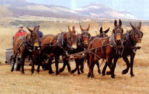
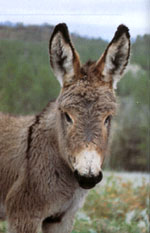
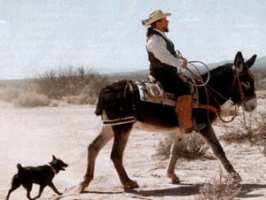
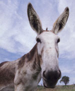
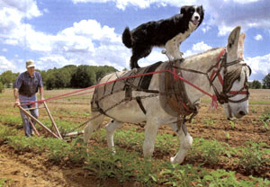

Cheers For The Long-Ears
December/January 2002
Issue # 195 - December/January 2003
Homesteading
Cheers for the long-ears
For homestead hardwork and comfortable companionship, their owners will tell you mules rule and donkeys are a dream. Talk to almost anyone who has one and they'll give you a lengthly list of these animals' virtues.
Edited by K.C. Compton
Donkeys and mules are remarkably versatile and hardy: They work as farm and pack animals as well as saddle mounts, jumpers and draft animals. Treasured for their intelligence and gentleness, they are sensitive and generally love people. If a mule or donkey is ill-tempered, experts say, it's a fair bet a human is to blame.
Comparisons to horses come naturally. After all, the animals are members of the Equidae family.
All domestic asses, or donkeys, are descendants of wild asses from Africa and Asia. The endangered Somali ass, though, is the only African wild ass still present in Africa. The donkey's characteristic dark, cross-shaped dorsal-and-withers stripe derives from the Nubian wild ass (Equus africanus africanus), which is considered extinct. Ancient Egyptian art depicts this animal as their domesticated beast of burden.
Wild horses and asses were hunted for food and for sport before becoming domesticated. Asses may have become partners to the human race as early as 2,800 B.C., though scholars disagree whether domestication began first in western Asia or northern Africa. More significant is the fact that the ass's natural habitat was hot, dry, hilly, rocky countryside-very different from the cool, broad steppes (grasslands) where the wild horse originated. These differences in habitat account for some of the behaviors we now attribute to donkeys and their hybrid cousins, mules.
Think of a mule or donkey and the stereotype that immediately comes to mind is stubborn. This perception has some basis in fact, but people who know these animals say they aren't so much obstinate as cautious. Highly intelligent-their fans would argue that they're smarter than horses-donkeys and mules are quick learners. Their legendary stubbornness is in fact a manifestation of their talent for self-preservation. They stop and think things through, then come to their own conclusions. It's when those conclusions differ from what humans want them to do that we apply their infamous reputation.
Mules are naturally suspicious and are wary to do just any old thing for any old body. Gain their trust, however, and you might be surprised at how cooperative they can be.
Dr. Larry Buggia of the Annabessacook Veterinary Clinic in Monmouth, Maine, says the evolutionary paths of horses and donkeys help explain the differences between the two species. Because the horse evolved in broad, open plains, its natural defense mechanism when startled or frightened is to run and put distance between it and any predator. Donkeys evolved in situations less conducive to flight and so developed the ability to analyze and respond appropriately to individual situations. "They evolved with a little more brain power," Buggia says.
This talent for thinking things through can be a great advantage: If a mule or donkey takes care of itself, it also is taking care of its cargo, human or otherwise. For decades, mules have been taking tourists down the narrow, winding paths into the Grand Canyon-a feat that should tell us something about mules' surefootedness and intelligent caution.
Muleand Donkey Definitions
From Mules and More magazine
Donkey - Nickname for members of the ass family (Equus asinus)
Jack, Jackass, Jack Ass - The male of the ass family
Jennet or Jenny - Female of the ass family
Burro - Small members of the ass family from Mexican and Spanish stock, native to the Southwest, but not widespread.
Mammoth Jack/Jennet - Large members (measuring 14 hands or more) of the ass family used for draft mule production.
Mule - A cross between a male ass (jack) and a female horse (mare).
Hinny - A cross between a male horse (stallion) and a female donkey.
STRONG AND SMART
A hybrid between a donkey and horse, the mule combines the best of both worlds-and, on rare occasions, the worst. A mule is the offspring of a male donkey (jack or jackass) and a female horse. A female donkey (jenny) mated with a male horse creates a Ninny or jennet.
Heavy-headed and long-eared, a mule has a donkey-like tail and fine-boned legs with small hooves. With shorter ears, a hinny has a more horse-like head and a long, full tail, but the smaller body of a donkey.
Mules usually display true hybrid vigor. Pound for pound, they are stronger than horses, live longer and are able to continue working throughout more of their lives than horses, although they mature somewhat later. They are less likely than horses to become ill or lame, and can live on frugal rations and in more extreme temperatures than horses. Stamina and resilience also are a deserved part of the mule's legend. (Hinnies are not necessarily as strong or hardy, however) Mules and Ninnies are virtually always sterile, but male mules should be gelded (castrated) to keep them tractable. Uncastrated mules can be very dangerous.
Low-maintenance mules have long held a reputation in the United States as the agricultural and draft animal of choice. They were a fundamental tool in the westward growth of the United States, hauling heavy loads over great distances (often to be thanked by becoming dinner when times got hard for the miners or pioneers who depended on their labor). Historical accounts boast the record of six mules hauling up to 7,000 pounds, 15 to 30 miles a day.
Among equestrians, the mule has become popular as a calm and steady replacement for the horse. Tim Roy of South Berwick, Maine, has been riding horses since his childhood days in Tennessee. After coming to Maine, he purchased a horse and continued riding. On overnight trail rides, Roy took note of the strength and stability of mules used by other riders.
"As I aged," he says, "I decided I wanted something for trail riding that was more mentally stable than a horse." He saw the advantage of riding an animal without the flight instinct horses often exhibit in new, frightening situations. He bought 11-year-old Hector through a mule dealer in Massachusetts.
"Hector satisfies my need for a horse," he says, "and the added bonus is that he makes a watch animal for the goats."
Roy says that mules' reputation for having a "side kick" meant he had to line up a new veterinarian-his old vet was too afraid of getting kicked. The new vet is perfectly comfortable with Hector, who has yet to kick anyone.
Lorraine Travis, author of The Mule (see "References," Page 49), attributes mules' undeserved reputation for bad temper to the animal's sensitive, cautious nature. Until mules learn to trust a person, they'll be poised for defensive action (never offensive, Travis says). Mules are great kickers, she says; if a mule misses, it's because he intended to.
Unfortunately, many people who work with mules do not appreciate the animal's sensitivity. They also may not have understood this fundamental characteristic: You cannot force a mule to do anything. Persuade, yes. Organize his work so he'll be willing to cooperate, but try to coerce or intimidate him and you'll have a battle on your hands.
Mules' reputation for a long memory is well-deserved, so it is especially important to treat them gently and intelligently. They'll remember whatever treatment they've received-for better or worse-and who its source was. Stories abound of mules waiting several years to avenge themselves on a bad handler.
Because poorly trained or mishandled mules can be bad company, before you buy one it's especially important to know where your animal came from and how it has been brought up.
DARLING DONKEYS
The donkey has been not only one of the most used, but also the most abused animals in history. It has spent hundreds of years in service to humans, but is still often misunderstood by its owners and, unfortunately, by veterinarians. There is a tendency to view donkeys as simply a small horse, but their nature and physiology are distinct and require different care. Dr. Elisabeth D. Svendsen has compiled information on all facets of donkey management in her book, The Professional Handbook of the Donkey. (See "References," Page 49.)
The donkey's long history as a beast of burden has given it an essential role in the economies of some of the world's poorest regions. More recently, however, the donkey has found its way into more affluent circles as an excellent family pet and a good-natured saddle mount. A new and promising use for the donkey's special temperament is as a therapeutic animal for people who are physically or mentally disabled.
Many donkey owners who also own horses praise the donkey's intelligence and congeniality. People who would never consider training a horse by themselves have been comfortable and successful in training a donkey.
Jan Rowe of Albion, Maine, who has years of experience with donkeys and horses says training donkeys is very different from horses because of the donkey's placid nature and intelligence. Donkeys won't be intimidated into doing something.
"A donkey looks at a whip and asks, `Are you kidding?"' she says.
Donkeys will become good friends, Rowe says. "They want to be with you. Once you get them to follow you around, you have it made."
Rowe has used some creative training approaches, once actually resorting to a carrot on a stick to get a donkey to take a first step. Her experience training donkeys includes working with two wild burros (small donkeys) that she adopted five years ago through the U. S. Bureau of Land Management's National Wild Horse and Burro Program [(866) 4-MUSTANGS; www.wildhorseandburro.blm.gov/ . This program removes these animals from public lands when their numbers threaten their habitat and health. Her burros, Shadow and Twilight, were so wild she couldn't get near them when she first brought them to her barn.
"At first I just brushed them with a broom so they could get used to being touched without the threat of my getting close to them," Rowe says. Eventually she was able to get close enough to touch them. She spent that first winter just "leaning on them and loving them"-not a had strategy for any donkey owner-until they followed her everywhere. She spent even more time working with them before attempting to train them for driving.
Well-trained donkeys make excellent introductory riding animals for young children and are beloved saddle mounts for many of their owners. Donkeys and mules don't have the big shoulders horses have, so their saddles have a special tail piece called a crupper to prevent saddle and rider from sliding forward onto the animal's neck. Some donkey owners like Rowe prefer to ride bareback or with a bareback pad. It just takes some knowledge and a lot of balance, she says. "Like learning to ride a bicycle."
Another role that contributes to the donkey's value on the farm is that of "watchdog." Donkey owners report their donkeys running stray dogs and coyotes from the property. Most donkeys cohabit happily with other animals, but because of their protective natures, they should be introduced slowly to new neighbors.
Allan Smith, of Union, Maine, says donkeys are easy to fence in. One strand of electric wire will do the job. "But you want to make sure there's a charge in it," he says. "When I don't charge their fence, they know it and they get out."
Even though they're most frequently used in this country as pets, donkeys' ability as draft animals shouldn't be overlooked. Small as they are, donkeys can pull quite a load. Sally Boyd of Teel Cove Farm in Tenants Harbor, Maine, uses her two standard donkeys, Hershey and Babe, for wood- and hay-gathering as well as for plowing her gardens. She ordered special small-scale equipment from England (including a plow, a spring-tooth harrow and cultivating tines) so she could work her animals in the garden. With the voice of experience, Boyd says using animals for garden work isn't for everyone.
"I'd imagine you'd get very frustrated if you're used to using a rototiller, because it takes three times as long with donkeys," she says. "But if you enjoy working with animals, it's fun."
Sally and her husband Walter run a subsistence farm in an area with rough terrain, one of her reasons for employing the donkeys. The animals are especially appropriate for working in rocky soil. "But you have to have patience and compassion for them," she says.
The donkey is a practical choice for farm work. Sally notes that a donkey is stronger than a workhorse per pound of body weight and hers need nothing but hay to thrive. "They're very undemanding animals."
"And they're fuel efficient," Walter adds.
References
The Professional Handbook of the Donkey compiled by Dr. Elisabeth D. Svendsen
Gives professional and practical advice on various aspects of donkey care
The Mule by Lorraine Travis
Good primer on mule history and care
Looking After a Donkey by Dorothy Morris
Information on tack, feeding, shelter and general care
Donkey Driving by Vivian and Richard Ellis and Joy Claxton
If you want a donkey to pull a cart or equipment, this book will help.
The books listed above are available in the United States through:
Diamond Farm Book Publishers
Division Yesteryear Toys & Books PO. Box 537 Alexandria Bay, NY 13607
www.diamondfarm.com
Magazines
The Brayer: Journal of the American Donkey and Mule Society
PO. Box 1210
Lewisville, TX 75067
(972) 219-0781
adms@juno.com
Mules and More
PO. Box 460
Bland, MO 65014
(573) 646-3934
Excellent lists of where to buy mules
Small Farmer's Journal
192 W. Barclay Drive
Sisters, OR 97759
agrarian@smallfarmersjournal.com
Resource for using mules as draft animals
Rural Heritage
281 Dean Ridge Lane
Gainesboro, TN 38562-5039
www.ruralheritage.com
Supports farming and logging with mules
GOOD CARE PAYS OFF
Having originally evolved in dry, harsh climates, donkeys can thrive on a simple diet. Keep donkeys off the sweet feed and grain, as they can founder and develop laminitis just as horses do. Mules are much less likely to founder because they know when they're full and will stop eating. As browsers, donkeys are fond of the roughage other animals may turn up their noses at, such as thistles and pigweed, so they can help maintain the landscape as they munch their way through the weeds. First, though, familiarize yourself with weeds in your area that might be poisonous to your animals by checking with your county extension agent.
The donkey's gentle, forbearing nature can be a problem when it comes to illness. Although they can get laminitis and colic, they may not show signs of distress until the disease is well-advanced. It's important to know your donkey or mule well and watch for even subtle changes in behavior, which might be your only clue that your critter is ill.
Donkeys and mules need to he dewormed regularly, so check with your veterinarian to set up a schedule. Keep the animals' area clean and manure-free to reduce the possibility of parasites or disease.
Low maintenance doesn't mean no maintenance. Donkeys and mules need to have their hooves trimmed regularly. Their hooves are shaped differently from horses, so you'll need to make sure your farrier is familiar with their particular hoof configurations.
Though these animals are hardy and don't need to be stabled, provide them with some shelter from extreme weather. Both donkeys and mules are energetic, hardworking animals, so you must make sure to regularly exercise them.
Far from being an ornery, low-class member of the equine family, donkeys and mules are noble animals with a rare combination of a friendly nature, great intelligence and remarkable strength. They continue to win converts, even among longtime horse lovers.
 Handsome and hardworking Dixie and Daisy, owned by Denny Huse of Bloomer, Wisconsin, are ready for action. Above: Bob Tomaskie and Jim Milliron drive a six-mule hitch, dragging a pasture harrow over hay fields on the S-K Ranch in Helena, Montana. |
 Fuzzy of face, long of ear, donkeys are one of humanity's hardest-working companions. |
 Howdy Fowler rides his burro near Columbus, New Mexico. Fowler and his wife founded the U.S. Saddle Donkey Club, which promotes the burro as an excellent saddle mount. |
|
 Wilbur Duncan cultivates his garden in Owenboro, Kentucky, with help from his donkey, Sid, whil e his dog, Hannah, rides lookout. |
 |
 |